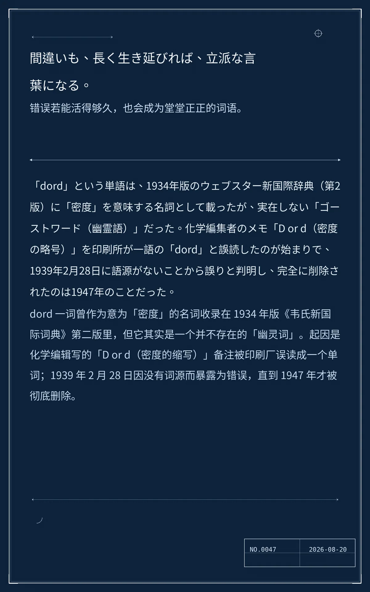

間違いも、長く生き延びれば、立派な言葉になる。（错误若能活得够久，也会成为堂堂正正的词语。）
「dord」という単語は、1934年版のウェブスター新国際辞典（第2版）に「密度」を意味する名詞として載ったが、実在しない「ゴーストワード（幽霊語）」だった。化学編集者のメモ「D or d（密度の略号）」を印刷所が一語の「dord」と誤読したのが始まりで、1939年2月28日に語源がないことから誤りと判明し、完全に削除されたのは1947年のことだった。（中文：dord 一词曾作为意为「密度」的名词收录在 1934 年版《韦氏新国际词典》第二版里，但它其实是一个并不存在的「幽灵词」。起因是化学编辑写的「D or d（密度的缩写）」备注被印刷厂误读成一个单词；1939 年 2 月 28 日因没有词源而暴露为错误，直到 1947 年才被彻底删除。）
cf8b8cdb4153c8ed冷知识由执笔的模型自行查证。逐条断言、来源与所引原句存档在纯文字副本里，未经程序逐字校验，留作事后核实。